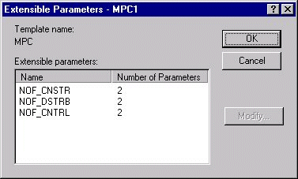
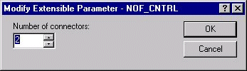
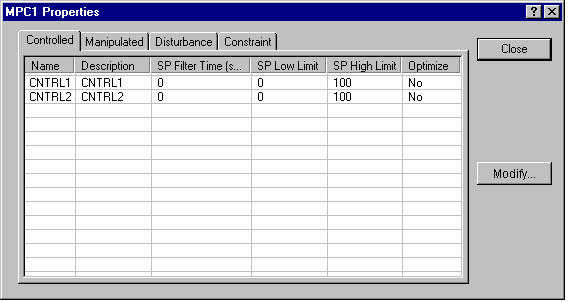
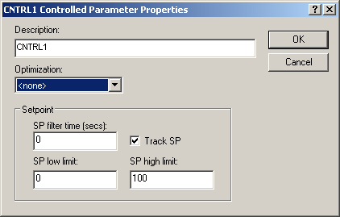
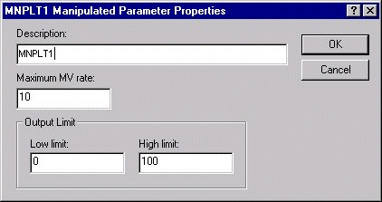
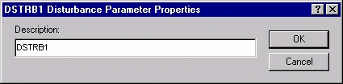
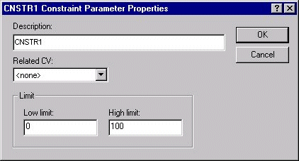

Model Predictive Control function block execution
The MPC function block defines the manipulated and disturbance inputs to a process and the controlled and constraint outputs of a process for the implementation of multivariable control strategies. This block can be used to replace conventional implementations involving decoupling, feedforward control, override control, and complex dynamics.
The target mode of the MPC function block and the status of the block's inputs determine the actual mode of the MPC block and the output status. In addition, because of the communication between the downstream function blocks and the MPC function block, the previous status of the BKCAL_IN influences the mode of the block.
The MPC algorithm executes in the following order:
It evaluates the actual mode based on target mode and the status of block inputs.
It executes the block algorithm based on the actual block mode.
It determines the status and value for block outputs update.
The processing done at each step of execution is described in the following sections.
Evaluate actual mode
The mode of the MPC function block depends on the current status of inputs, the past mode of the function block, prediction time, and the current target mode.
The manner in which the block executes depends on the actual mode of the block.
In OOS mode, the block algorithm is not executed.
In IMan mode, the projected response over the horizon is calculated based on the current inputs, assuming that the outputs remain at their current value. The MPC output value is calculated to match the associated BKCAL_IN inputs.
In Man mode, the projected response over the horizon is calculated as in IMan mode. The MPC output value is calculated to match the current block output values.
In Auto mode, the projected response is calculated and the calculated outputs for normal control generated. If the output is not limited (as indicated by its associated BKCAL_IN), the calculated output is reflected in the block output. Also, when the output is limited but the calculated output will drive the output away from the limit, the calculated output is reflected in the block output. Otherwise, the last output is maintained and the MPC algorithm re-run for the output constant.
Update output value and status
The manner in which the MPC function block outputs are updated depends on the mode of the MPC block and whether a cascade connection has been established with a downstream block.
In OOS mode, the status of the MPC outputs is set to BAD Out of Service. The block does not change the value of block outputs.
In IMan mode, the MPC function block has been unable to establish a cascade connection with one or more of the downstream blocks because they are not in the correct mode. Until the initialization process is complete for an output, the calculate output (provide by the MPC algorithm to match the value on its associated BKCAL_IN) is written to the block output. Once the initialization process is complete for an input, the output remains at its last value with a status of GOOD Cascade Const.
In Man mode, the output values are not written by the MPC algorithm but can be changed by the operator. The status of the outputs is GOOD Cascade Const.
In Auto mode, the calculated output is written to the output or maintained at last value if the calculated output will drive the output further within its downstream limit. The output status should be Good Cascade NonSpecific.
MPC function block execution rate
MPC can be used in an application as long as a function block execution time of one second or slower is sufficient to meet your process control requirements. The MPC function block scan rate multiplier is automatically set based on the time to steady state to provide an algorithm execution rate of one second or slower. Since the MPC algorithm uses model and controller matrices, which are generated on a very specific time base, the DeltaV Predict application automatically configures the effective scan rate. The execution time is defined by the process response time estimation (entered as the time to steady state when you request that the process be tested for identification) divided by prediction horizon (120 samples) in seconds.
Alarming
When the MPC function block detects configuration errors or abnormal conditions, they are automatically reflected in the BLOCK_ERR parameter. By setting the BAD_MASK parameter, you can determine which condition set BAD_ACTIVE. All conditions not included in BAD_ACTIVE are reflected in the ABNORMAL_ACTIVE parameters. These xxxx_ACTIVE parameters can be used in defining module alarms.
MPC configuration
Any change in the block configuration requires that you reconnect to the block from the Predict application for the change to be reflected in the block's behavior.
Since the MPC block is an extensible function block, you can select the number of controlled, constraint, and disturbance parameters that are required to meet your process control needs. The number of manipulated and back calculation input parameters are set to equal the number of controlled parameters that you specify. The default is for the MPC block to have two controlled parameters. When you right-click the MPC function block and select Extensible Parameters, the following dialog is provided to specify MPC block inputs.

When you select the number of either control, disturbance, or constraints (NOF_XXXX) and then click Modify, a dialog appears in which you can change the number of inputs. For example, to change the number of controlled parameters, select NOF_CNTRL, and then click Modify. The following dialog appears, which allows you to specify the number of controlled parameters.

After you specify the number of inputs to meet your application needs, click OK. The dialog closes, and the MPC block resizes to reflect the specified number of inputs (and outputs).
Once you define the number of inputs to the MPC block, you can configure the parameters associated with this function block. To enter configuration information, right-click the MPC function block, and then select Properties. In response, the following dialog appears, which allows you to enter configuration information.

You can specify the configurable parameters associated with the controlled, manipulated, disturbance, and constraint parameters. Select an input or output listed in this dialog and click the Modify button. Then, you can change the configurable values associated with this parameter.
For a controlled parameter, the following configuration dialog appears.

Description — The parameter name that you want to appear in the Predict application and the MPC Operate view using MPC Dynamos. The default description name is the connector name (for example, CNTRL1). It is recommended that the parameter description contain 14 characters or fewer.
- Optimization – The impact of the Control parameter on plant cost or profit. The selections are:
None — Not considered in the objective function. There is no cost or profit associated with this parameter
Maximize - the working setpoint of this Controlled Variable will increase until the setpoint is reached or decrease by as much as required to prevent constraint variables from violating their limits.
Minimize - the working setpoint of this Controlled Variable will decrease until the setpoint is reached or increase by as much as required to prevent constraint variables from violating their limits.
Observe Limit - the working setpoint of this Controlled Variable will drive towards the setpoint or move away from it by as much as required to prevent constraint variables from violating their limits.
SP Filter Time — The time required for 63% of an SP change to be made (in seconds). This filter time is used to set the setpoint trajectory.
Track SP — If enabled, the SP tracks the Controlled parameter value when the MPC block is in a Target mode of MAN. This option is enabled by default.
SP Low Limit — The minimum SP value (in engineering units) that an operator can enter. A setpoint entry that is lower than this limit is truncated to the limit value.
SP High Limit — The maximum SP value (in engineering units) that an operator can enter. A setpoint entry that is greater than this limit is truncated to the limit value.
For a manipulated parameter, the following configuration dialog appears.

Description — The parameter name that you want to appear in the Predict application and the MPC Operate view using MPC Dynamos. The default description is the connector name (for example, CNTRL1). It is recommended that the parameter description contain 14 characters or fewer.
Maximum MV Rate — The maximum rate at which the MPC function block can change the manipulated parameter (in engineering units per second).
Low Limit — The minimum output value (in engineering units) that an operator can enter. An entry that is lower than this limit is truncated to the limit value.
High Limit — The maximum output value (in engineering units) that an operator can enter. An entry that is greater than this limit is truncated to the limit value.
For a disturbance parameter, the following configuration dialog appears.

Description — The parameter name that you want to appear in the Predict application and the MPC Operate view using MPC Dynamos. The default description is the connector name (for example, CNTRL1). It is recommended that the parameter description contain 14 characters or fewer.
For a constraint parameter, the following configuration dialog appears.

Description — The parameter name that you want to appear in the Predict application and the MPC Operate view using MPC Dynamos. The default description is the connector name (for example, CNTRL1). It is recommended that the parameter description contain 14 characters or fewer.
Related CV — The controlled parameter that is allowed to deviate from setpoint to prevent the constraint from violating its low or high limit.
Low Limit — The minimum constraint target (in engineering units) that an operator can enter. An entry that is lower than this limit is truncated to the limit value.
High Limit — The maximum constraint target (in engineering units) that an operator can enter. An entry that is greater than this limit is truncated to the limit value.